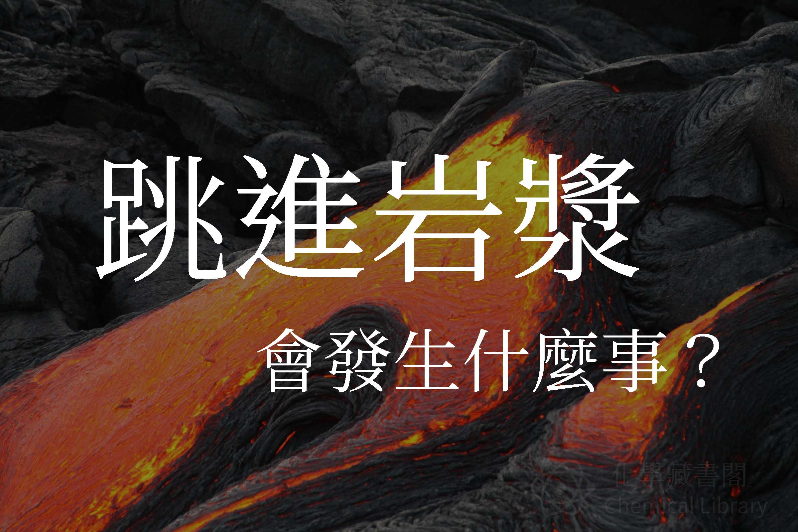

跳進岩漿會是什麼感覺(沒人想知道…，很多人可能為以為，人體會慢慢下陷，然後被燒掉，但是假如真的跳下去，可能會引起爆炸
人體組成
跳進岩漿後，人體會直接與高熱的岩漿接觸，這時人體的組成就很重要，其中成年人有 50% ~ 70% 的水分。
為什麼會爆炸？
水在蒸發時，體積會瞬間暴增，體內的細胞，會把水蒸氣困住，在壓力極大，細胞撐不住，會發生爆炸性的結果，這種不能說成爆炸，爆炸是一種氧化的過程，而這類型的效果就跟爆炸一樣。
這裡的原理類似把生雞蛋放微波爐一樣
相關影片
這部影片中，他把一袋「有機物」，丟進岩漿裡面，發生的反應也跟上述相同，發生了爆炸